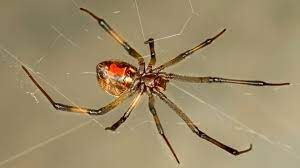
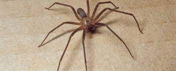
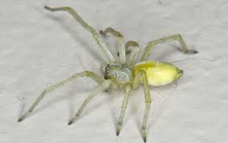

Females are 6.35–15.875mm long and black with distinctive red hourglass-shaped mark. A row of red spots is sometimes visible above.
Males are half the size of females but have longer legs.
Bristles on their hind legs, which they use to cover their prey with silk once it has been trapped.
More Interesting Facts
Even though they have highly toxic venom, 15 times stronger than a rattlesnake, they are not aggressive insects. National Geographic Kids
The Black Widow only bites defensively if the web is disturbed, and they rarely bite humans. But, if you are one of the few unlucky people who are bitten each year, you should know that the venom affects your nervous system. Some people are only slightly affected by it, but many have a severe response. If you are bitten, the bite requires medical attention, and the neurotoxic venom can be fatal to small children if untreated.
Brown Widow
Latrodectus Geometricus

Identifiable Features
Females are 6.35–15.875mm long and are light brown. The abdomen has an orangish hourglass-shaped mark.
Males are roughly half the size of females. Look for an orange spot on the abdomen that may be broken into two spots.
The legs on both sexes are light brown with dark brown near the joints.
Also known as the Grey Widow
More Interesting Facts
Brown Widows are believed to have originated in either Africa or South America. But now, they are found across the world, typically near buildings in warmer areas. They are timid and rarely bite. In the rare case that a bite does occur, the symptoms include high blood pressure, sweating, vomiting, respiratory muscle weakness, and possible seizures. Sometimes you can develop a very stiff abdomen that may mimic appendicitis. The worst pain is generally in the first 8-12 hours.
Brown Recluse
Loxosceles Reclusa

Identifiable Features
Both sexes are 6.35–9.525 mm long.
Yellowish to grayish brown. The head is often darker, usually with faint or distinct violin-shaped marks.
Long legs.
Also known as the Violin Spider or Fiddle Back
More Interesting Facts
These venomous spiders can be found in Arkansas both outdoors and indoors. Yes, you can’t even escape them in your house, as Brown Recluses are commonly found in homes and buildings. They prefer dimly lit locations, like dark corners in a basement, closets, cluttered areas, or even inside your shoe or bed! Many people regard the Brown Recluse as more dangerous than the Black Widow because a Brown Recluse looks like many other common types of house spiders. So instead of treating them with caution and respect, most people don’t even know they are looking at a dangerous venomous spider! Unfortunately, since they live indoors, bites often occur when you accidentally step or roll on them while sleeping. The bite is painless, so you may not even know you have been bitten until later.
Black-Footed Yellow Sac
Cheiracanthium Inclusum

Identifiable Features
Both sexes are 5–10 mm long with a pale yellow-beige color and dark brown markings on its palps, jaws, and on the ends of its feet.
There is often an orange-brown stripe running down the top center of its abdomen
Also known as the American Yellow Sac Spider
More Interesting Facts
Their bite begins with a bit of pain followed by itching and swelling. Symptoms from the bite typically are gone within 7-10 days. On the bright side, Yellow Sac Spiders rarely bite! The severity of a Yellow Sac bite is not nearly as bad as a Black Widow or Brown Recluse. A study of twenty confirmed Yellow Sac Spider bites found that none resulted in necrosis (decaying of tissue due to cells dying). Instead, it seems like their bites cause swelling.
These venomous spiders are most often found in Arkansas on the foliage of trees and shrubs. But it’s not out of the question to find one in your house or other manufactured structures. Honestly, it’s pretty uncommon to actually see a Yellow Sac Spider unless you’re actively searching for one. The reason is that they are nocturnal and only come out at night to feed and mate.
Lastly, Black-footed Yellow Sac Spiders caused quite a big problem for Mazda. The automobile company had to recall over 65,000 Mazda 6 vehicles after discovering that webs from this species were clogging fuel system ventilation tubes. It seems that the spiders are attracted to the smell of petrol, but it’s unclear why only this particular model was affected!